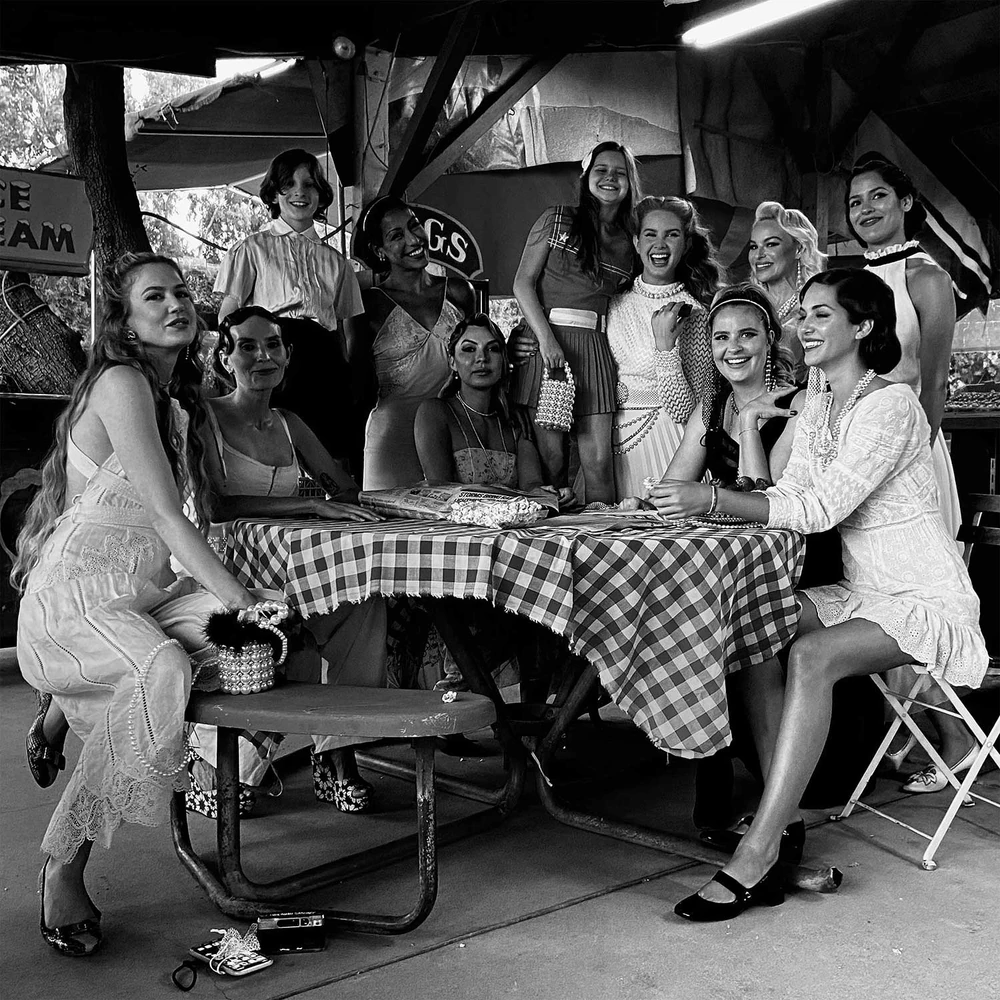
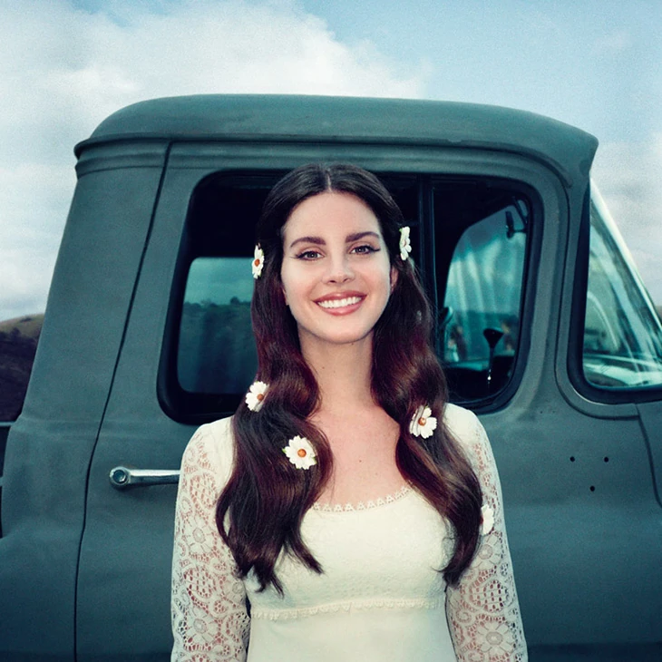

Lana Del Rey nos transporta para uma América bucólica e melancólica, onde a beleza do interior encontra um mistério etéreo. Chemtrails Over The Country Club é um mergulho na busca por autenticidade e na fuga da complexidade da vida em Hollywood. Com uma sonoridade que pende para o Folk e o Country, o álbum narra o desejo de uma vida simples, de reuniões tranquilas em escolas primárias e de joias esquecidas em piscinas. É uma reflexão sobre a estranha beleza da normalidade, e como o sentimento de estar "selvagem" e "na estrada" pode coexistir com a serenidade suburbana.
CHEMTRAILS OVER THE COUNTRY CLUB
A estética do disco é introspectiva e sutil, marcada por um piano constante e experimentações com elementos de Americana. Diferente de seus trabalhos mais grandiosos, Lana aqui parece sussurrar seus segredos mais profundos, explorando temas como o destino, a identidade e a permanência de seus laços familiares e amorosos. O álbum é um retrato de uma artista que se sente simultaneamente deslocada e profundamente enraizada, observando os rastros de fumaça (chemtrails) sobre a paz do clube de campo. É um convite a contemplar o que realmente significa a liberdade e o lar.
O sol se põe suavemente sobre as colinas da Califórnia, e o vento traz consigo a promessa de liberdade. Lust for Life é um hino à esperança e à busca por felicidade em meio ao caos. Lana Del Rey nos convida a tirar as flores do cabelo e a olhar para o céu, encontrando beleza na simplicidade e força na união. Com uma estética retrô e bucólica, o álbum marca um novo ciclo, celebrando o amor, a natureza e a vitalidade de uma nova era. É a trilha sonora perfeita para longas viagens de carro e dias ensolarados, encapsulando a leveza de um espírito livre.
Lust for Life
Nesta fase, Lana abandona o drama sombrio para abraçar uma sonoridade mais celestial e expansiva. A colaboração com artistas como The Weeknd e Stevie Nicks injeta uma energia renovada e sonhadora. As letras navegam por temas de ativismo, política e a busca por um propósito maior, sem nunca perder sua assinatura melancólica e poética. Lust for Life é mais do que um álbum; é um manifesto de que, mesmo nos tempos mais estranhos, o desejo de viver e a beleza do mundo permanecem como a nossa maior fonte de inspiração e resistência.